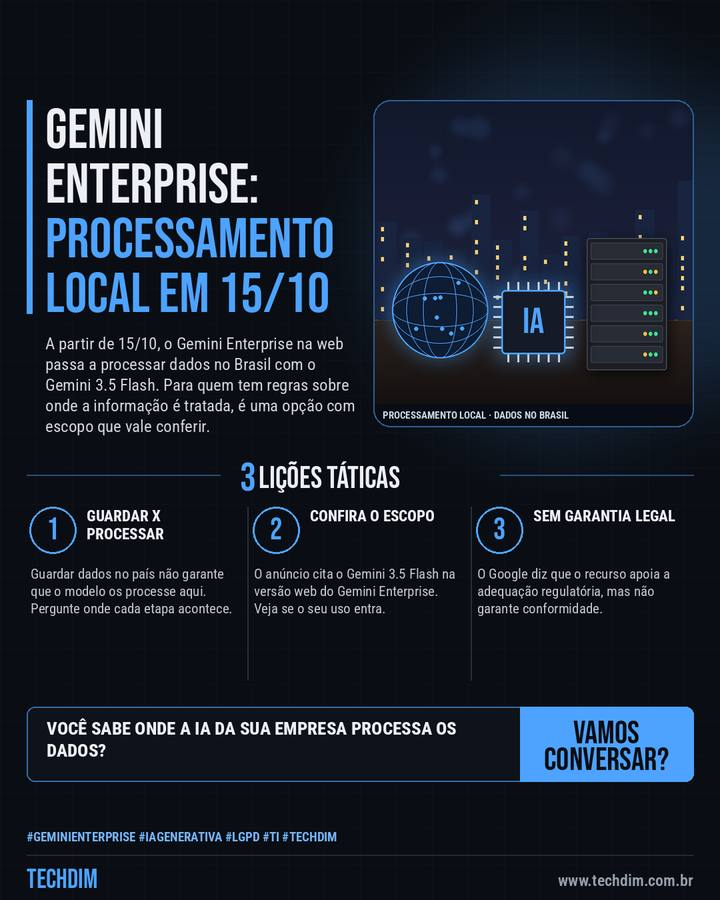

Notícia de tecnologia
Gemini Enterprise processará dados no Brasil a partir de 15/10 com o Gemini 3.5 Flash
A partir de 15/10, o Gemini Enterprise na web passa a processar dados no Brasil com o Gemini 3.5 Flash. Para quem tem regras sobre onde a informação é tratada, é uma opção com escopo que vale conferir.

Em resumo
- A partir de 15/10, o Gemini Enterprise na web passa a ter processamento de dados no Brasil com o Gemini 3.5 Flash, anunciou o Google Cloud no Brazil Summit
- O objetivo é atender empresas com regras sobre onde processar dados e reduzir a latência. O Google diz que apoia a adequação regulatória, sem garantir conformidade
- Segundo o Canaltech, vale para determinadas cargas, e a latência menor é possibilidade. O armazenamento para agentes já era no país; só o 3.5 Flash foi citado
Sua empresa usa IA com dados de clientes? Pergunte ao fornecedor onde cada etapa é processada.
Por que importa
Empresas com regras sobre onde os dados são processados ganham uma opção no país, com escopo limitado que vale conferir antes de contar com ela.
O que fazer na prática
- Guardar x processar. Guardar dados no país não garante que o modelo os processe aqui. Pergunte onde cada etapa acontece.
- Confira o escopo. O anúncio cita o Gemini 3.5 Flash na versão web do Gemini Enterprise. Veja se o seu uso entra.
- Sem garantia legal. O Google diz que o recurso apoia a adequação regulatória, mas não garante conformidade.
Fontes consultadas
Mais do Radar de hoje
- Alerta de segurança SonicWall SMA 1000 CVE-2026-102255: falha nota 10 já sofre tentativas de ataque
- Dica prática Restaurar o OneDrive: desfaça em 5 passos o estrago de ransomware ou exclusão em massa
- Serviço TECHDIM Check-up de TI: diagnóstico da infraestrutura e da segurança antes que algo pare a empresa
Leia também
Este texto resume as fontes citadas na data de publicação. Confira sempre o aviso oficial do fabricante antes de agir em produção.